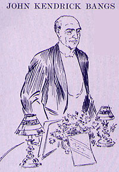

|  JOHN KENDRICK BANGS said: I AM sorry to say, ladies and gentlemen, that I cannot promise Colonel Harvey anything better on the other side of Jordan than he has here, and from what I know is coming to him there I would advise him to stay here as long as possible. I have come here to-night to speak. Colonel Harvey wrote me a year and a half ago and asked me if I would not prepare an impromptu toast for Mark Twain's seventieth-birthday dinner, and I am sorry to say it has been delayed five days. That was not my fault. I had on my evening clothes that night to come to the dinner when I received notice that the dinner had been put off until to-night, so that all the fictitious writers of imagination might be gathered together. So I offer this toast: |
|
Here's to the Prince of Wits! Here's to his Seventy years -- Time the fugacious flits Over this vale of tears, But never a mark leaves in his train To dimmer the loyal love for Twain In the warp and woof of the hearts of those Whose troubles and woes, Whose sorrow and pain, Have vanished and fled into thinnest air 'Neath the magic touch of his genius rare! God give him a year For every fear His blithesome spirit has turned to cheer! God grant him a day For every ray Of Light he's shed on Sorrow's way! God give him power For every hour Of joy he's brought where storm-clouds lower -- And his seventy years will straightway be But the end of a promising infancy! |